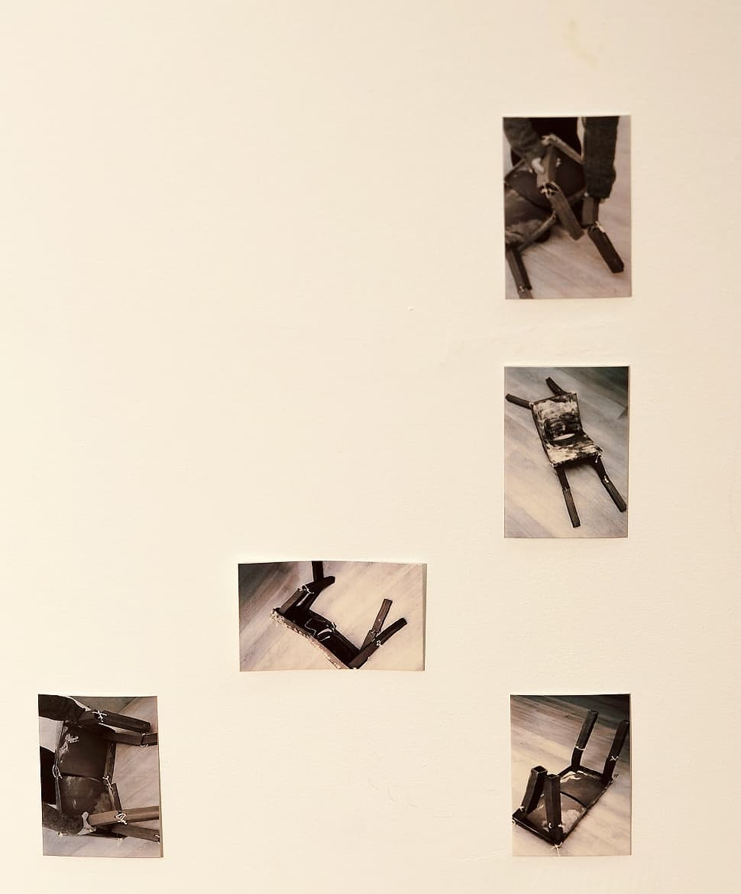
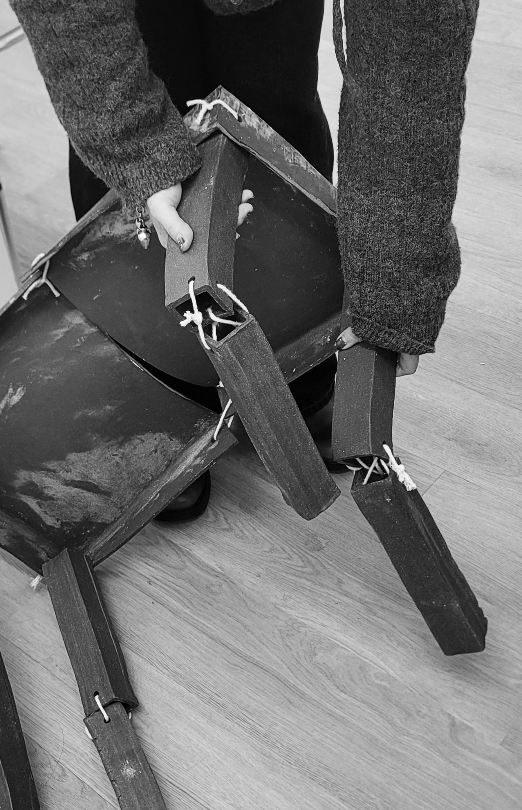
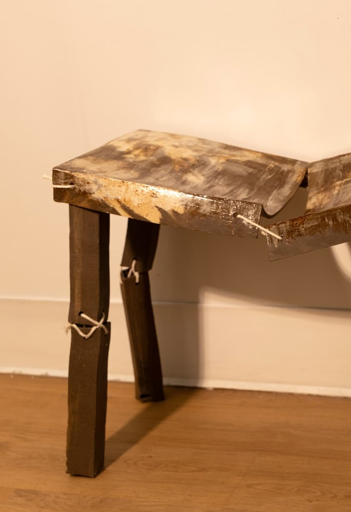

This foldable ceramic table refuses stability. Its hinges do not lock, and its structure remains difficult to control or fully stand. When pressure is applied to one side, the table does not absorb the force; instead, tension travels across the surface, pulling at the opposite edge, the hinge line, and the legs. A push becomes a demand elsewhere. Weight placed in one location produces strain in another, making balance something that must be actively negotiated rather than assumed.
Because the table is made of ceramic—rigid yet fragile—this transfer of tension is heightened. The material amplifies every shift: a slight lean causes the surface to torque, legs to slide, and joints to resist alignment. The table responds not with stability, but with vibration, hesitation, and the threat of collapse. To keep it upright, bodies must redistribute force—holding a corner, bracing a leg, or counteracting movement from the opposite side. The object turns pressure into a relational condition.
The table is accompanied by small zinc photographs placed on either side, positioned in relation to the object like chairs beside a table. Each plate bears images of the table in unstable states: leaning, partially collapsed, or awkwardly propped through improvisation. In the documentation, hands appear holding a leg, stopping a fall, or attempting to correct a misalignment. In one image, the table is nearly collapsing, caught mid-tilt; in another, it is momentarily sustained through bodily intervention. These images do not document success, but trace how tension circulates through the object and into those who attempt to support it.


